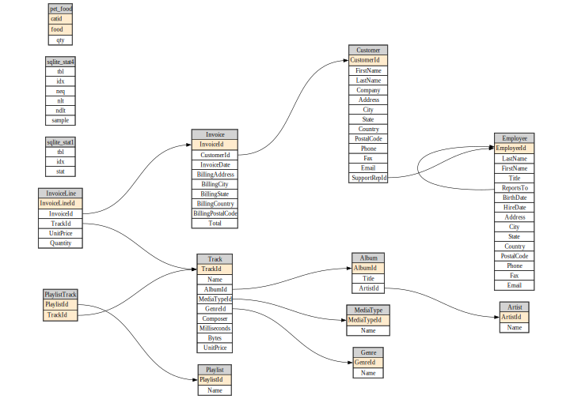

from IPython.display import Markdown
from fastcore.test import test_fail, test_eq
from fastcore.net import urlsave
import loggingSource
Source code for fastlite
Metadata
url = 'https://github.com/lerocha/chinook-database/raw/master/ChinookDatabase/DataSources/Chinook_Sqlite.sqlite'
path = Path('chinook.sqlite')
if not path.exists(): urlsave(url, path)logging.getLogger('apsw').setLevel(logging.ERROR)
db = Database("chinook.sqlite")Database.t
def t(
):
Exported source
class _Getter:
"Abstract class with dynamic attributes providing access to DB objects"
def __init__(self, db): self.db = db
# NB: Define `__dir__` in subclass to get list of objects
def __repr__(self): return ", ".join(dir(self))
def __contains__(self, s): return (s if isinstance(s,str) else s.name) in dir(self)
def __iter__(self): return iter(self[dir(self)])
def __getitem__(self, idxs):
if isinstance(idxs,str): return self.db.table(idxs)
return [self.db.table(o) for o in idxs]
def __getattr__(self, k):
if k[0]=='_': raise AttributeError
return self.db[k]
class _TablesGetter(_Getter):
def __dir__(self): return [o for o in self.db.table_names() if not o.startswith('sqlite_')]
@patch(as_prop=True)
def t(self:Database): return _TablesGetter(self)By returning a _TablesGetter we get a repr and auto-complete that shows all tables in the DB.
dt = db.t
dtAlbum, Artist, Customer, Employee, Genre, Invoice, InvoiceLine, MediaType, Playlist, PlaylistTrack, Track, pet_foodartist = dt.Artist
artist<Table Artist (ArtistId, Name)>This also can be used to get multiple tables at once.
dt['Album','Artist'][<Table Album (AlbumId, Title, ArtistId)>, <Table Artist (ArtistId, Name)>]You can iterate through it:
for tbl in dt:
if tbl.name[0]=='A': print(tbl)"Album"
"Artist"assert 'Artist' in dt
assert artist in dt
assert 'foo' not in dtView.c
def c(
):
Exported source
class _Col:
def __init__(self, t, c): self.t,self.c = t,c
def __str__(self): return f'"{self.t}"."{self.c}"'
def __repr__(self): return self.c
def __iter__(self): return iter(self.c)
class _ColsGetter:
def __init__(self, tbl): self.tbl = tbl
def __dir__(self): return map(repr, self())
def __call__(self): return [_Col(self.tbl.name,o.name) for o in self.tbl.columns]
def __contains__(self, s): return (s if isinstance(s,str) else s.c) in self.tbl.columns_dict
def __repr__(self): return ", ".join(dir(self))
def __getattr__(self, k):
if k[0]=='_': raise AttributeError
return _Col(self.tbl.name, k)
@patch(as_prop=True)
def c(self:Table): return _ColsGetter(self)
@patch(as_prop=True)
def c(self:View): return _ColsGetter(self)Table.c
def c(
):
Column auto-complete and repr are much the same as tables.
ac = artist.c
acArtistId, NameColumns stringify in a format suitable for including in SQL statements.
print(f"select {ac.Name} ...")select "Artist"."Name" ...View.__str__
def __str__(
):
Return str(self).
Exported source
@patch
def __str__(self:Table): return f'"{self.name}"'
@patch
def __str__(self:View): return f'"{self.name}"'Table.__str__
def __str__(
):
Return str(self).
Tables and views do the same.
print(f"select {ac.Name} from {artist}")select "Artist"."Name" from "Artist"assert 'Name' in ac
assert ac.Name in ac
assert 'foo' not in acQueries and views
Database.q
def q(
sql:str, params:NoneType=None
):
Exported source
@patch
def q(self:Database, sql: str, params=None):
return list(self.query(sql, params=params))This is a minor shortcut for interactive use.
acdc = db.q(f"select * from {artist} where {ac.Name} like 'AC/%'")
acdc[{'ArtistId': 1, 'Name': 'AC/DC'}]Exported source
def _get_flds(tbl):
return [(k, v|None, field(default=UNSET))
for k,v in tbl.columns_dict.items()]
def _dataclass(self:Table, store=True, suf='')->type:
"Create a `dataclass` with the types and defaults of this table"
res = make_dataclass(self.name.title()+suf, _get_flds(self))
flexiclass(res)
if store: self.cls = res
return res
Table.dataclass = _dataclassartist_dc = artist.dataclass()
art1_obj = artist_dc(**acdc[0])
art1_objArtist(ArtistId=1, Name='AC/DC')artist.cls__main__.ArtistYou can get the definition of the dataclass using fastcore’s dataclass_src:
src = dataclass_src(artist_dc)
hl_md(src, 'python')@dataclass
class Artist:
ArtistId: int | None = UNSET
Name: str | None = UNSETall_dcs
def all_dcs(
db, with_views:bool=False, store:bool=True, suf:str=''
):
dataclasses for all objects in db
Exported source
def all_dcs(db, with_views=False, store=True, suf=''):
"dataclasses for all objects in `db`"
return [o.dataclass(store=store, suf=suf) for o in list(db.t) + (db.views if with_views else [])]create_mod
def create_mod(
db, mod_fn, with_views:bool=False, store:bool=True, suf:str=''
):
Create module for dataclasses for db
Exported source
def create_mod(db, mod_fn, with_views=False, store=True, suf=''):
"Create module for dataclasses for `db`"
mod_fn = str(mod_fn)
if not mod_fn.endswith('.py'): mod_fn+='.py'
dcs = all_dcs(db, with_views, store=store, suf=suf)
strlist = ', '.join([f'"{o.__name__}"' for o in dcs])
with open(mod_fn, 'w') as f:
print(f'__all__ = [{strlist}]', file=f)
print('from dataclasses import dataclass', file=f)
print('from fastlite.kw import UNSET', file=f)
for o in dcs: print(dataclass_src(o), file=f)create_mod(db, 'db_dc')Database.link_dcs
def link_dcs(
mod
):
Set the internal dataclass type links for tables using mod (created via create_mod)
from db_dc import *
dt.Track.get(1)Track(TrackId=1, Name='For Those About To Rock (We Salute You)', AlbumId=1, MediaTypeId=1, GenreId=1, Composer='Angus Young, Malcolm Young, Brian Johnson', Milliseconds=343719, Bytes=11170334, UnitPrice=0.99)Table.__call__
def __call__(
where:str | None=None, # SQL where fragment to use, for example `id > ?`
where_args:Union=None, # Parameters to use with `where`; iterable for `id>?`, or dict for `id>:id`
order_by:str | None=None, # Column or fragment of SQL to order by
limit:int | None=None, # Number of rows to limit to
offset:int | None=None, # SQL offset
select:str='*', # Comma-separated list of columns to select
with_pk:bool=False, # Return tuple of (pk,row)?
as_cls:bool=True, # Convert returned dict to stored dataclass?
xtra:dict | None=None, # Extra constraints
kwargs:VAR_KEYWORD
)->list:
Shortcut for rows_where or pks_and_rows_where, depending on with_pk
Exported source
@patch
def __call__(
self:Table,
where:str|None=None, # SQL where fragment to use, for example `id > ?`
where_args: Iterable|dict|NoneType=None, # Parameters to use with `where`; iterable for `id>?`, or dict for `id>:id`
order_by: str|None=None, # Column or fragment of SQL to order by
limit:int|None=None, # Number of rows to limit to
offset:int|None=None, # SQL offset
select:str = "*", # Comma-separated list of columns to select
with_pk:bool=False, # Return tuple of (pk,row)?
as_cls:bool=True, # Convert returned dict to stored dataclass?
xtra:dict|None=None, # Extra constraints
**kwargs)->list:
"Shortcut for `rows_where` or `pks_and_rows_where`, depending on `with_pk`"
f = getattr(self, 'pks_and_rows_where' if with_pk else 'rows_where')
if not xtra: xtra = getattr(self, 'xtra_id', {})
if xtra:
xw = ' and '.join(f"[{k}] = {v!r}" for k,v in xtra.items())
where = f'{xw} and {where}' if where else xw
res = f(where=where, where_args=where_args, order_by=order_by, limit=limit, offset=offset, select=select, **kwargs)
if as_cls and hasattr(self,'cls'):
if with_pk: res = ((k,self.cls(**v)) for k,v in res)
else: res = (self.cls(**o) for o in res)
return list(res)
View.__call__ = Table.__call__This calls either rows_where (if with_pk) or with_pk (otherwise). If dataclass(store=True) has been called, then if as_cls rows will be returned as dataclass objects.
artist(limit=2)[Artist(ArtistId=1, Name='AC/DC'), Artist(ArtistId=2, Name='Accept')]If with_pk then tuples are returns with PKs 1st.
artist(with_pk=True, limit=2)[(1, Artist(ArtistId=1, Name='AC/DC')), (2, Artist(ArtistId=2, Name='Accept'))]artist.get(1)Artist(ArtistId=1, Name='AC/DC')Table.selectone
def selectone(
where:str | None=None, # SQL where fragment to use, for example `id > ?`
where_args:Union=None, # Parameters to use with `where`; iterable for `id>?`, or dict for `id>:id`
select:str='*', # Comma-separated list of columns to select
as_cls:bool=True, # Convert returned dict to stored dataclass?
xtra:dict | None=None, # Extra constraints
kwargs:VAR_KEYWORD
)->list:
Shortcut for __call__ that returns exactly one item
Exported source
@patch
def selectone(
self:Table,
where:str|None=None, # SQL where fragment to use, for example `id > ?`
where_args: Iterable|dict|NoneType=None, # Parameters to use with `where`; iterable for `id>?`, or dict for `id>:id`
select:str = "*", # Comma-separated list of columns to select
as_cls:bool=True, # Convert returned dict to stored dataclass?
xtra:dict|None=None, # Extra constraints
**kwargs)->list:
"Shortcut for `__call__` that returns exactly one item"
res = self(where=where, where_args=where_args, select=select, as_cls=as_cls, xtra=xtra, limit=2)
if len(res)==0: raise NotFoundError
elif len(res) > 1: raise ValueError(f"Not unique: {len(res)} results")
return res[0]
View.selectone = Table.selectoneartist.selectone('Name=?', ('AC/DC',))Artist(ArtistId=1, Name='AC/DC')try: artist.selectone('Name like ?', ('%a%',))
except ValueError: pass
else: raise Exception("Failed to get non unique exception")try: artist.selectone('Name=?', ('i do not exist',))
except NotFoundError: pass
else: raise Exception("Failed to get NotFoundError")db.item('select ArtistId from artist where Name=?', ('AC/DC',))1Database.set_classes
def set_classes(
glb
):
Add set all table dataclasses using types in namespace glb
Exported source
@patch
def set_classes(self:Database, glb):
"Add set all table dataclasses using types in namespace `glb`"
for tbl in self.t: tbl.cls = glb[tbl.name.title()]db.tAlbum, Artist, Customer, Employee, Genre, Invoice, InvoiceLine, MediaType, Playlist, PlaylistTrack, Track, cat, pet_foodDatabase.get_tables
def get_tables(
glb
):
Add objects for all table objects to namespace glb
Exported source
@patch
def get_tables(self:Database, glb):
"Add objects for all table objects to namespace `glb`"
for tbl in self.t: glb[tbl.name.lower()+'s'] = tbldb.set_classes(globals())
db.get_tables(globals())
albums(limit=1)[Album(AlbumId=1, Title='For Those About To Rock We Salute You', ArtistId=1)]album = dt.Album
acca_sql = f"""select {album}.*
from {album} join {artist} using (ArtistId)
where {ac.Name} like 'AC/%'"""
hl_md(acca_sql, 'sql')select "Album".*
from "Album" join "Artist" using (ArtistId)
where "Artist"."Name" like 'AC/%'db.q(acca_sql)[{'AlbumId': 1,
'Title': 'For Those About To Rock We Salute You',
'ArtistId': 1},
{'AlbumId': 4, 'Title': 'Let There Be Rock', 'ArtistId': 1}]db.create_view("AccaDaccaAlbums", acca_sql, replace=True)<Database <apsw.Connection object "/Users/jhoward/aai-ws/fastlite/nbs/chinook.sqlite">>Database.v
def v(
):
Exported source
class _ViewsGetter(_Getter):
def __dir__(self): return self.db.view_names()
@patch(as_prop=True)
def v(self:Database): return _ViewsGetter(self)dv = db.v
dvAccaDaccaAlbumsdv.AccaDaccaAlbums()[{'AlbumId': 1,
'Title': 'For Those About To Rock We Salute You',
'ArtistId': 1},
{'AlbumId': 4, 'Title': 'Let There Be Rock', 'ArtistId': 1}]Exported source
def _parse_typ(t): return t if not (_args:= get_args(t)) else first(_args, bool)_parse_typ(Union[int, None])intget_typ
def get_typ(
t
):
Get the underlying type.
get_typ(Union[int, None])intget_typ(int)intIf you have an Enum where all the fields are the same type, then _get_typ will return that type.
class _Test(Enum): foo='val1'; bar=2
class _Test2(Enum): foo='val3'; bar='val4'# fields are not the same type
get_typ(_Test)<enum '_Test'># fields are all of type `str`
get_typ(_Test2)strDatabase.create
def create(
cls:NoneType=None, # Dataclass to create table from
name:NoneType=None, # Name of table to create
pk:str='id', # Column(s) to use as a primary key
foreign_keys:NoneType=None, # Foreign key definitions
defaults:NoneType=None, # Database table defaults
column_order:NoneType=None, # Which columns should come first
not_null:NoneType=None, # Columns that should be created as ``NOT NULL``
hash_id:NoneType=None, # Column to be used as a primary key using hash
hash_id_columns:NoneType=None, # Columns used when calculating hash
extracts:NoneType=None, # Columns to be extracted during inserts
if_not_exists:bool=False, # Use `CREATE TABLE IF NOT EXISTS`
replace:bool=False, # Drop and replace table if it already exists
ignore:bool=True, # Silently do nothing if table already exists
transform:bool=False, # If table exists transform it to fit schema
strict:bool=False, # Apply STRICT mode to table
):
Create table from cls, default name to snake-case version of class name
The class you pass to create is converted to a dataclass where any fields missing a default are defaulted to None.
class Nm(Enum): fn='meow'; ln='prr'
class Cat: id: int; name:Nm|None; age: int|None; city: str = "Unknown"
cats = db.create(Cat)
Cat(1)Cat(id=1, name=UNSET, age=UNSET, city='Unknown')print(cats.schema)CREATE TABLE [cat] (
[id] INTEGER PRIMARY KEY,
[name] TEXT,
[weight] FLOAT
)db.create(Cat)<Table cat (id, name, weight)>To transform a table after creation, use the .create() method again, this time with the transform keyword set to True.
class Cat: id: int; name: str; age: int; city: str = "Unknown"; breed: str = "Unknown"
cats = db.create(Cat, transform=True)
cats<Table cat (id, name, age, city, breed)>Cat(1)Cat(id=1, name=UNSET, age=UNSET, city='Unknown', breed='Unknown')print(cats.schema)CREATE TABLE "cat" (
[id] INTEGER PRIMARY KEY,
[name] TEXT,
[age] INTEGER,
[city] TEXT,
[breed] TEXT
)db.t.cat.drop()Database.import_file
def import_file(
table_name, file, format:NoneType=None, pk:NoneType=None, alter:bool=False
):
Import path or handle file to new table table_name
This uses sqlite_utils.utils.rows_from_file to load the file.
db = Database(":memory:")
csv1 = "id,name,age\n1,Alice,30\n2,Bob,25"
csv2 = "id,name,age\n3,Charlie,35\n4,David,40"
csv3 = "id,name,age,city\n5,Eve,45,New York"
# import file to new table
tbl = db.import_file("people", csv1)
assert len(tbl()) == 2
# import file to existing table (same schema)
tbl = db.import_file("people", csv2)
assert len(tbl()) == 4
# import file to existing table (schema change fails)
test_fail(lambda: db.import_file("people", csv3),contains='city')
# import file to existing table (schema change succeeds)
assert 'city' not in tbl.c
tbl = db.import_file("people", csv3, alter=True)
assert 'city' in tbl.c
print(tbl())
tbl.drop()[{'id': 1, 'name': 'Alice', 'age': 30, 'city': None}, {'id': 2, 'name': 'Bob', 'age': 25, 'city': None}, {'id': 3, 'name': 'Charlie', 'age': 35, 'city': None}, {'id': 4, 'name': 'David', 'age': 40, 'city': None}, {'id': 5, 'name': 'Eve', 'age': 45, 'city': 'New York'}]Database diagrams
(Requires graphviz.)
fk = album.foreign_keys[0]
fkForeignKey(table='Album', column='ArtistId', other_table='Artist', other_column='ArtistId')diagram
def diagram(
tbls, ratio:float=0.7, size:str='10', neato:bool=False, render:bool=True
):
Exported source
def _edge(tbl):
return "\n".join(f"{fk.table}:{fk.column} -> {fk.other_table}:{fk.other_column};"
for fk in tbl.foreign_keys)
def _row(col):
xtra = " 🔑" if col.is_pk else ""
bg = ' bgcolor="#ffebcd"' if col.is_pk else ""
return f' <tr><td port="{col.name}"{bg}>{col.name}{xtra}</td></tr>'
def _tnode(tbl):
rows = "\n".join(_row(o) for o in tbl.columns)
res = f"""<table cellborder="1" cellspacing="0">
<tr><td bgcolor="lightgray">{tbl.name}</td></tr>
{rows}
</table>"""
return f"{tbl.name} [label=<{res}>];\n"Exported source
def diagram(tbls, ratio=0.7, size="10", neato=False, render=True):
layout = "\nlayout=neato;\noverlap=prism;\noverlap_scaling=0.5;""" if neato else ""
edges = "\n".join(map(_edge, tbls))
tnodes = "\n".join(map(_tnode, tbls))
res = f"""digraph G {{
rankdir=LR;{layout}
size="{size}";
ratio={ratio};
node [shape=plaintext]
{tnodes}
{edges}
}}
"""
return Source(res) if render else resdb = Database("chinook.sqlite")diagram(db.tables)